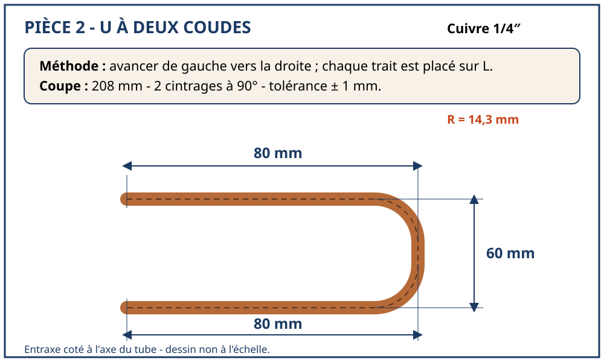
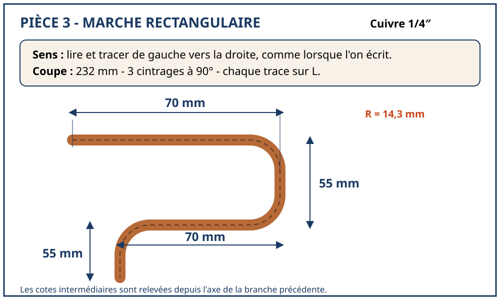
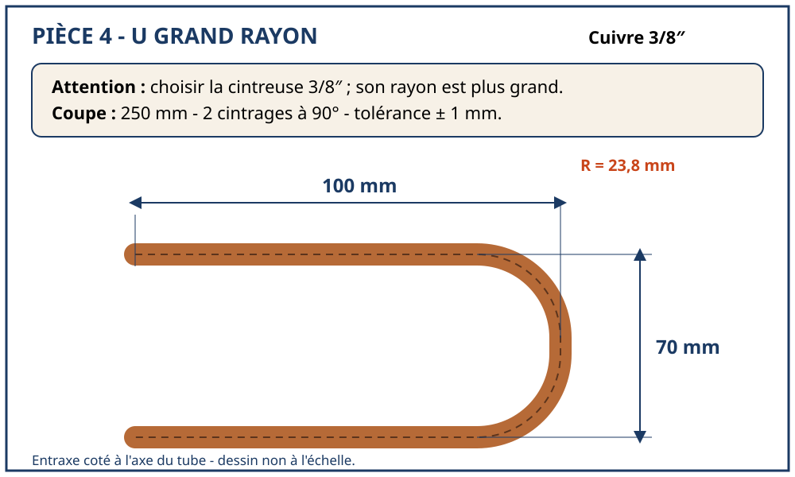
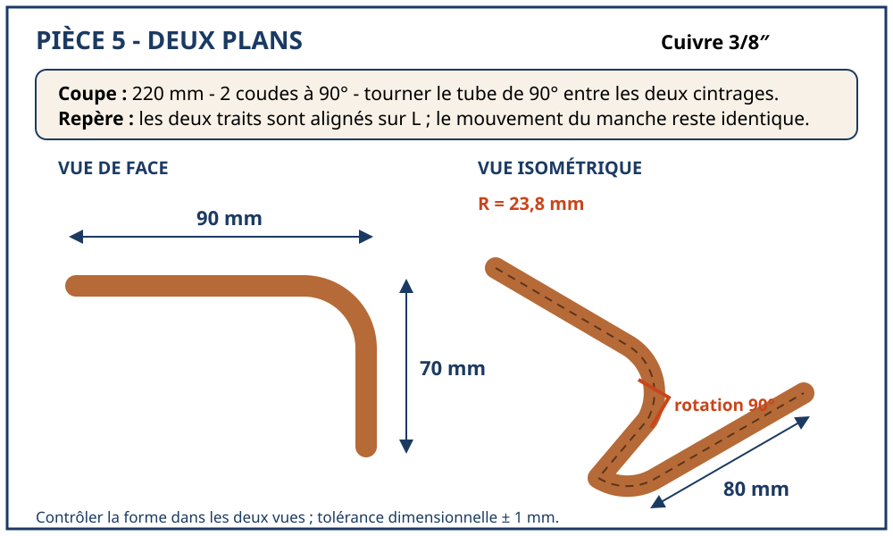

Mode d’emploi
- Une tablette par poste, ouverte sur la station du jour (lien direct, ou la carte). Le site marche hors ligne une fois chargé.
- L’élève déroule les sept temps : le but, le matériel (il coche), le geste écran par écran, les pièges, le défi (il gagne son tampon), son propre contrôle (oui/non, avec renvoi au geste qui corrige), puis il vous appelle.
- Vous confirmez sur l’écran « Le professeur » : un niveau de 0 à 4, qui reste sur l’appareil seulement (aucun nom, aucune donnée envoyée). Pour votre suivi, reportez le niveau dans votre outil habituel.
- Les narrations sont à relire avant toute voix fabriquée : la page de relecture.
- La voix part au clic (« Écouter ») ; « Voix à chaque écran » la fait partir à chaque changement d’écran, pour un élève qui a les mains prises. C’est la voix de la tablette : une voix fabriquée attend votre feu vert.
- Le mode revue : ajoutez
?revueà l’adresse d’une station pour voir les clips manquants et les points à valider, écran par écran.
Mesurer si ça marche
En séance, comptez les appels au professeur. Un appel pour confirmer est un succès ; un appel pour expliquer signale un manque de la station. On vise zéro appel d’explication.
Liste de tournage des clips
C’est la seule fabrication qui vous revient : vos mains, le vrai outil. 10 à 20 secondes par clip, au téléphone, en paysage, cadré sur les mains, sans visage d’élève, sans son. Déposez le fichier sous le nom indiqué (format MP4), puis relancez node outils/construire.mjs : la station le prend à la place du dessin. Un clip absent n’empêche rien : le dessin reste.
1.0 Mon poste de travail
| n° | Ce que le clip montre | Fichier à déposer | État |
|---|---|---|---|
| 1 | Je m’équipe Bleu de travail et chaussures de sécurité. Retirez bague et gourmette, attachez vos cheveux. Point clé : Rien ne doit pendre ni flotter. |
clips/1-0/01-equiper.mp4 | à filmer |
| 2 | Je repère les secours Montrez du doigt l’arrêt d’urgence, la trousse de secours, l’extincteur et le point d’eau. Point clé : Vous les montrez sans chercher. |
clips/1-0/02-secours.mp4 | à filmer |
| 3 | Je dégage mon poste Dégagez l’établi et les passages. Rien au sol. Point clé : Un sol libre, un établi libre. |
clips/1-0/03-degager.mp4 | à filmer |
| 4 | Je rassemble et je vérifie mes outils Posez sur l’établi les outils du jour. Vérifiez chacun : bien emmanché, molette libre, rien d’ébréché. Point clé : Un outil douteux se pose de côté, et on le signale. |
clips/1-0/04-outils.mp4 | à filmer |
| 5 | Je coche ma fiche de sécurité Cochez la tâche du jour, les risques et les protections. Faites-la viser par le professeur. Point clé : Pour le façonnage : coupures, projections, écrasement. |
clips/1-0/05-fiche.mp4 | à filmer |
| 6 | Lunettes et gants, au bon moment Lunettes sur les yeux pendant tout le façonnage : couper, ébavurer, cintrer, évaser. Gants pour toucher un tube coupé. Point clé : Jamais de gants près d’un outil qui tourne tout seul, comme une perceuse à colonne. |
clips/1-0/06-epi.mp4 | à filmer |
| 7 | Je serre l’étau sans me pincer Serrez progressivement, les doigts hors de l’axe de serrage. Pour un tube, des mordaches. Pieds stables, face à l’étau, mors à hauteur du coude. Point clé : Juste de quoi tenir : un tube en cuivre s’écrase vite. |
clips/1-0/07-etau.mp4 | à filmer |
| 8 | Je range au fil de l’eau Chaque outil tranchant revient à sa place. Chaque chute va au bac, debout, tout de suite. Point clé : Jamais d’outil chez le voisin, jamais de chute sur l’établi. |
clips/1-0/08-ranger.mp4 | à filmer |
| 9 | Je rends mon poste propre Desserrez la molette du coupe-tube, nettoyez et rangez les outils, triez les chutes, balayez. Retirez vos protections en dernier. Point clé : Le poste suivant doit trouver un poste prêt. |
clips/1-0/09-rendre.mp4 | à filmer |
1.1 Reconnaître le tube
| n° | Ce que le clip montre | Fichier à déposer | État |
|---|---|---|---|
| 1 | Regarder comment le tube est livré En couronne, le tube est recuit : il se cintre à la main. En barre droite, il est écroui : il reste rigide. Point clé : Couronne = recuit. Barre = écroui. |
clips/1-1/01-livraison.mp4 | à filmer |
| 2 | Regarder les bouts Les bouts d’un tube neuf sont bouchés, ou écrasés pour une couronne. Point clé : Un tube frigorifique reste fermé jusqu’au dernier moment. |
clips/1-1/02-bouts.mp4 | à filmer |
| 3 | Vérifier le zéro du pied à coulisse Fermez les becs : le zéro du vernier doit tomber pile sur le zéro de la règle. Point clé : Becs joints, on lit 0. |
clips/1-1/03-zero.mp4 | à filmer |
| 4 | Poser les becs sur l’extérieur du tube Ouvrez, posez le tube entre les grands becs, bien en travers de son axe, refermez jusqu’au contact, sans serrer. Refaites la mesure après un quart de tour du tube. Point clé : C’est le diamètre EXTÉRIEUR qui nomme le tube. |
clips/1-1/04-becs.mp4 | à filmer |
| 5 | Lire la mesure Les millimètres entiers se lisent à gauche du zéro du vernier. Puis cherchez le trait du vernier qui tombe pile sur un trait de la règle : c’est le dixième. Point clé : 9 mm entiers, trait aligné sur le 5 : 9,5 mm. |
clips/1-1/05-lire.mp4 | à filmer |
| 8 | Reboucher le tube Remettez le bouchon, ou écrasez le bout d’une couronne. Ne soufflez jamais dedans. Point clé : Le tube ressort comme il est entré : fermé. |
clips/1-1/08-reboucher.mp4 | à filmer |
1.2 Mesurer et tracer
| n° | Ce que le clip montre | Fichier à déposer | État |
|---|---|---|---|
| 1 | Lire la cote et le diamètre Sur le plan, repérez la cote en millimètres et le diamètre du tube en pouces. Point clé : La cote en mm, le tube en pouces : 70 mm de tube 1/4″. |
clips/1-2/01-lire-plan.mp4 | à filmer |
| 2 | Choisir le bout de référence Décidez de quel bout part la cote. Ce sera toujours le même. Point clé : Attention au sens de la cote. |
clips/1-2/02-reference.mp4 | à filmer |
| 3 | Plaquer le tube contre la butée Posez l’équerre à plat sur l’établi. Poussez le bout de référence du tube contre elle. Point clé : Le bout touche l’équerre, sans jour. |
clips/1-2/03-butee.mp4 | à filmer |
| 4 | Poser le mètre contre la même butée Posez le ruban le long du tube, son crochet poussé contre l’équerre. Point clé : Tube et mètre partent du même point. |
clips/1-2/04-metre.mp4 | à filmer |
| 5 | Lire la cote de face Placez l’œil juste au-dessus de la graduation. Point clé : L’œil au-dessus du trait, jamais de biais. |
clips/1-2/05-lire.mp4 | à filmer |
| 6 | Marquer un trait fin Au feutre fin, marquez un petit trait sur le tube, pile en face de la graduation. Point clé : Un trait fin : son milieu est la cote. |
clips/1-2/06-marquer.mp4 | à filmer |
| 7 | Faire le tour du tube Tenez le feutre immobile sur le trait et faites tourner le tube : le trait fait le tour. Point clé : Le tube tourne, le feutre ne bouge pas. |
clips/1-2/07-tour.mp4 | à filmer |
| 8 | Remesurer Replacez tube et mètre contre la butée, et relisez. Trois mesures, pas une seule. Point clé : Trois fois la même valeur, ou on ne coupe pas. |
clips/1-2/08-remesurer.mp4 | à filmer |
1.3 Couper et ébavurer
| n° | Ce que le clip montre | Fichier à déposer | État |
|---|---|---|---|
| 1 | Vérifier le tube Le tube est droit, sans bosse ni coude, et le trait de coupe est tracé tout autour. Point clé : Un tube cabossé ne se coupe pas droit. |
clips/1-3/01-verifier.mp4 | à filmer |
| 2 | Poser la molette sur le trait Ouvrez le coupe-tube, posez le tube sur les deux galets et amenez la molette exactement sur le trait. Point clé : L’outil est perpendiculaire au tube. |
clips/1-3/02-poser.mp4 | à filmer |
| 3 | Serrer jusqu’au contact Tournez la poignée jusqu’à ce que la molette touche le tube, puis serrez encore un peu. Point clé : Un peu, pas plus : la molette mord à peine. |
clips/1-3/03-serrer.mp4 | à filmer |
| 4 | Faire un premier tour lent Tournez le coupe-tube une fois autour du tube, lentement. Point clé : Ce premier tour trace un repère tout autour du tube. |
clips/1-3/04-premier-tour.mp4 | à filmer |
| 5 | Tourner, dans un sens puis dans l’autre Faites tourner l’outil autour du tube en poussant, puis en tirant la poignée. Point clé : C’est l’outil qui tourne. Le tube, lui, ne bouge pas. |
clips/1-3/05-tourner.mp4 | à filmer |
| 6 | Resserrer un peu à chaque tour Quand l’outil tourne plus facilement, resserrez un peu la molette. Recommencez jusqu’à ce que le tube se sépare. Point clé : Lentement. Un peu de serrage à chaque tour, jamais beaucoup d’un coup. |
clips/1-3/06-resserrer.mp4 | à filmer |
| 7 | Tenir le bout vers le bas Retournez le tube : le bout à ébavurer regarde le sol. Point clé : Les copeaux tombent dehors, jamais dans le tube. |
clips/1-3/07-bout-en-bas.mp4 | à filmer |
| 8 | Ébavurer l’intérieur Engagez l’alésoir dans le tube et faites deux à trois quarts de tour, dans un sens puis dans l’autre. Point clé : Léger : on enlève la bavure, pas le métal. |
clips/1-3/08-ebavurer-int.mp4 | à filmer |
| 9 | Ébavurer l’extérieur Passez l’ébavureur sur l’arête extérieure pour casser le fil de métal. Point clé : Un tour léger suffit. |
clips/1-3/09-ebavurer-ext.mp4 | à filmer |
1.4 Cintrer à la cintrette
| n° | Ce que le clip montre | Fichier à déposer | État |
|---|---|---|---|
| 1 | Contrôler l’outil, les mains hors de la pince Vérifiez la cintrette. Tenez-la par les poignées, jamais près du guide. Point clé : Deux mains sur les deux poignées, personne dans l’axe du tube. |
clips/1-4/01-outil.mp4 | à filmer |
| 2 | Tracer la ligne de contrôle Tracez une ligne droite sur toute la longueur du tube, sur le dessus. Point clé : Cette ligne doit rester sur le dessus pendant tout le cintrage. |
clips/1-4/02-ligne.mp4 | à filmer |
| 3 | Trouver le rayon de votre cintrette Sur une chute : tracez à 300 mm, posez ce trait sur le 0, cintrez à 90°. Mesurez la branche à l’axe, contre la butée. Point clé : Rc = ce que vous mesurez − 300. |
clips/1-4/03-essai.mp4 | à filmer |
| 4 | Tracer le début du cintrage Sur la pièce, depuis le bout de référence, tracez à 300 − Rc. Point clé : Cette soustraction ne vaut que pour un coude à 90°. |
clips/1-4/04-tracer.mp4 | à filmer |
| 5 | Engager le tube, trait sur le 0 Engagez le tube au fond de la gorge. Placez le trait exactement en face du repère 0, ligne de contrôle dessus. Point clé : Exactement sur le 0 : le 0, c’est le début du coude. |
clips/1-4/05-zero.mp4 | à filmer |
| 6 | Cintrer doucement, à deux mains Rapprochez les poignées lentement, d’un mouvement continu. Point clé : Lentement, et d’un seul mouvement. |
clips/1-4/06-cintrer.mp4 | à filmer |
| 7 | Arrêter au repère des 90° Arrêtez quand le 0 arrive en face du repère des 90°. Relâchez et regardez l’équerrage. Point clé : Le cuivre revient un peu en arrière quand on relâche. |
clips/1-4/07-arreter.mp4 | à filmer |
| 8 | Sortir la pièce Ouvrez les poignées et sortez le tube sans forcer. Point clé : On ne redresse pas un coude à la main. |
clips/1-4/08-sortir.mp4 | à filmer |
1.5 Cintrer à la cintreuse (L, R, 0)
| n° | Ce que le clip montre | Fichier à déposer | État |
|---|---|---|---|
| 1 | Prendre la bonne cintreuse Le marquage de la cintreuse doit être celui du tube : 1/4″ avec 1/4″. Point clé : Une cintreuse, un diamètre. |
clips/1-5/01-choisir.mp4 | à filmer |
| 2 | Choisir le repère : L ou R La cote part de l’extrémité gauche du tube ? Ce sera L. De l’extrémité droite ? Ce sera R. Point clé : L comme Left, gauche. R comme Right, droite. |
clips/1-5/02-choisir-repere.mp4 | à filmer |
| 3 | Tracer la cote finie Depuis le bout choisi, tracez la cote du plan : 80 mm pour la pièce 1. Point clé : On trace la cote finie, telle qu’elle est sur le plan. |
clips/1-5/03-tracer.mp4 | à filmer |
| 4 | Lever le bras tournant Levez le bras tournant, bras en l’air : le guide s’écarte de la forme. Point clé : Bras en l’air : la gorge est libre. |
clips/1-5/04-lever.mp4 | à filmer |
| 5 | Engager le tube sous le crochet fixe Posez le tube dans la gorge et glissez-le sous le crochet, en haut du bras fixe. Point clé : Le tube est bloqué par le crochet. |
clips/1-5/05-engager.mp4 | à filmer |
| 6 | Rabattre le bras tournant Rabattez le bras : le guide vient se poser sur le tube. Point clé : Le guide est posé sur le tube ; le tube peut encore coulisser. |
clips/1-5/06-rabattre.mp4 | à filmer |
| 7 | Amener le trait sur L Faites coulisser le tube jusqu’à ce que le trait soit exactement en face de L. Point clé : Exactement sur le repère : un millimètre d’écart, un millimètre d’erreur. |
clips/1-5/07-sur-L.mp4 | à filmer |
| 8 | Ou sur R, si la cote part de la droite Même geste, mais le trait se pose en face de R. Point clé : Le repère suit le bout d’où part la cote. |
clips/1-5/08-sur-R.mp4 | à filmer |
| 9 | Ou sur le 0, si vous avez retiré Rc Vous avez tracé la cote moins Rc, comme à la cintrette ? Posez alors le trait en face du 0. Point clé : Le 0 : le coude commence au trait. |
clips/1-5/09-sur-0.mp4 | à filmer |
| 10 | Ramener le bras Main gauche : poignée et tube. Main droite : ramenez le bras vers vous, d’un seul mouvement. Point clé : Progressivement, sans à-coup. |
clips/1-5/10-cintrer.mp4 | à filmer |
| 11 | Arrêter quand le 0 est face au 90 Le 0 du bras arrive en face du 90 de la forme : arrêtez. Tenez compte de la détente. Point clé : 0 face à 90 : coude à 90°. |
clips/1-5/11-angle.mp4 | à filmer |
| 12 | Dégager, puis enchaîner Relevez le bras, dégagez le tube du crochet, sortez-le. Coude suivant : mesurez depuis l’axe de la branche déjà cintrée. Point clé : Toujours de gauche à droite, avec le même mouvement du bras. |
clips/1-5/12-enchainer.mp4 | à filmer |
1.6 Le dudgeon
| n° | Ce que le clip montre | Fichier à déposer | État |
|---|---|---|---|
| 1 | Partir d’un bout parfait Le tube est coupé d’équerre au coupe-tube, jamais à la scie, et ébavuré bout en bas, sans trop enlever de métal. Point clé : Un bout de travers fait un dudgeon de travers. |
clips/1-6/01-bout.mp4 | à filmer |
| 2 | Enfiler l’écrou, dans le bon sens Enfilez l’écrou sur le tube, filetage tourné vers le bout à évaser. Point clé : Avant d’évaser. Toujours. |
clips/1-6/02-ecrou.mp4 | à filmer |
| 3 | Serrer le tube dans la barre Dans le trou du bon diamètre, côté chanfrein. Le tube dépasse de la cote A, puis on serre les écrous papillons. Point clé : Dépassement A, entre le mini et le maxi de la notice d’un appareil : 1/4″ 0,7 à 1,3 · 3/8″ 1,0 à 1,6 · 1/2″ 1,0 à 1,8 · 5/8″ 2,2 à 2,4 mm. |
clips/1-6/03-barre.mp4 | à filmer |
| 4 | Poser l’étrier Posez l’étrier sur la barre, le cône bien au centre du tube, et bloquez-le. Point clé : Le cône au centre, sinon le dudgeon sera décentré. |
clips/1-6/04-etrier.mp4 | à filmer |
| 5 | Visser jusqu’à la butée Tournez la poignée : le cône descend et rabat le bout du tube à 45°. Continuez jusqu’à la butée. Point clé : Régulièrement, sans forcer au-delà de la butée. |
clips/1-6/05-evaser.mp4 | à filmer |
| 6 | Dévisser et contrôler Remontez le cône, retirez l’étrier, desserrez la barre et regardez le dudgeon. Point clé : Lisse, régulier, centré, sans fissure. |
clips/1-6/06-controler.mp4 | à filmer |
| 7 | Huiler et visser à la main Une goutte d’huile frigorifique sur les cônes. Présentez le tube sur le raccord et vissez l’écrou à la main, jusqu’au contact. Point clé : À la main d’abord : l’écrou doit se visser sans résistance. |
clips/1-6/07-main.mp4 | à filmer |
| 8 | Serrer au couple, à deux clés Clé dynamométrique sur l’écrou, contre-clé sur le raccord. Serrez jusqu’au couple. Point clé : Couples de la notice d’un appareil : 1/4″ 15,7 · 3/8″ 29,4 · 1/2″ 29,4 · 5/8″ 73,6 N·m. Sur chantier, la notice de l’appareil fait foi. |
clips/1-6/08-couple.mp4 | à filmer |
1.7 L’emboîture à la pince
| n° | Ce que le clip montre | Fichier à déposer | État |
|---|---|---|---|
| 1 | Partir d’un bout parfait Coupé d’équerre au coupe-tube, ébavuré bout vers le bas, sans trop enlever de métal. Point clé : Une bavure oubliée fait fendre le tube. |
clips/1-7/01-bout.mp4 | à filmer |
| 2 | Choisir la tête du bon diamètre Prenez la tête qui porte le diamètre du tube. Point clé : Une tête par diamètre, jamais « à peu près ». |
clips/1-7/02-tete.mp4 | à filmer |
| 3 | Visser la tête sur la pince Pince ouverte, vissez la tête à fond, dans le sens des aiguilles d’une montre. Point clé : Tête vissée à fond, pince ouverte. |
clips/1-7/03-visser.mp4 | à filmer |
| 4 | Enfiler la tête jusqu’à la butée Pince ouverte, enfilez la tête dans le tube jusqu’à la butée. Tenez le tube à la main, la pince dans son axe. Point clé : À la main, pas dans l’étau : la pince doit rester dans l’axe du tube. |
clips/1-7/04-enfiler.mp4 | à filmer |
| 5 | Serrer un premier tiers Serrez les poignées environ au tiers de leur course, puis desserrez. Point clé : Jamais tout d’un coup. |
clips/1-7/05-tiers.mp4 | à filmer |
| 6 | Tourner d’un quart de tour Pince desserrée, tournez-la d’un quart de tour dans le tube. Point clé : Entre deux serrages, un quart de tour. |
clips/1-7/06-quart.mp4 | à filmer |
| 7 | Serrer aux deux tiers, puis jusqu’à la butée Serrez aux deux tiers, desserrez, puis serrez jusqu’à la butée de la pince. Point clé : Trois serrages progressifs, jusqu’à la butée. |
clips/1-7/07-butee.mp4 | à filmer |
| 8 | Retirer et essayer Desserrez, retirez la tête. Glissez le bout de tube d’essai dans l’emboîture. Point clé : Il entre sans forcer, et sans jouer. |
clips/1-7/08-essai.mp4 | à filmer |
2.1 Le poste oxyacétylénique en sécurité
| n° | Ce que le clip montre | Fichier à déposer | État |
|---|---|---|---|
| 1 | M’équiper Lunettes à verres teintés avec protections sur les côtés, gants et tablier en cuir, tenue en coton, pantalon sur les chaussures. Le professeur vous donne le numéro de teinte. Point clé : Rien de gras sur moi ni sur mes gants. |
clips/2-1/01-epi.mp4 | à filmer |
| 2 | Dégager la zone Un mètre libre autour du poste. Repérez l’extincteur. Point clé : Ni chiffon, ni carton, ni produit inflammable. |
clips/2-1/02-zone.mp4 | à filmer |
| 3 | Contrôler les bouteilles Debout, à la verticale, arrimées par leur chaîne, loin de toute chaleur. Reconnaissez-les à l’ogive. Une bouteille d’acétylène qui a été couchée ne s’utilise pas : prévenez le professeur. Point clé : L’acétylène ne se couche jamais. |
clips/2-1/03-bouteilles.mp4 | à filmer |
| 4 | Vérifier le détendeur et le chalumeau fermés Vis de détente desserrées à fond, robinets du chalumeau fermés. Point clé : Vis desserrée : rien ne passe vers le chalumeau. |
clips/2-1/04-detendeur.mp4 | à filmer |
| 5 | Contrôler tuyaux et clapets Tuyaux sans nœud ni pincement, bien raccordés à leur couleur. Clapets anti-retour en place. Point clé : Bleu sur l’oxygène, rouge sur l’acétylène. |
clips/2-1/05-tuyaux.mp4 | à filmer |
| 6 | Ouvrir l’oxygène, lentement À la main, un quart de tour, le corps sur le côté du détendeur. Lisez la haute pression. Point clé : Un quart de tour suffit, et on reste de côté. |
clips/2-1/06-ouvrir-o.mp4 | à filmer |
| 7 | Régler la basse pression d’oxygène Vissez la vis de détente jusqu’à la valeur donnée par le professeur. Point clé : La valeur de l’atelier, pas une valeur au hasard. |
clips/2-1/07-bp-o.mp4 | à filmer |
| 8 | Ouvrir et régler l’acétylène Toujours après l’oxygène : même geste sur la bouteille d’acétylène, clé laissée dessus. Basse pression à la valeur donnée. Point clé : Jamais plus de 1,5 bar d’acétylène. |
clips/2-1/08-ouvrir-a.mp4 | à filmer |
| 9 | Chercher les fuites à l’eau savonneuse Au pinceau, sur les détendeurs, les robinets et les raccords. Une bulle, c’est une fuite. Point clé : Jamais une flamme pour chercher une fuite. |
clips/2-1/09-savon.mp4 | à filmer |
| 10 | Appeler le professeur Le poste est prêt. Le professeur le vérifie et le vise : pas de visa, pas d’allumage. Point clé : L’allumage se fait toujours devant le professeur. |
clips/2-1/10-visa.mp4 | à filmer |
2.2 Allumer, régler, éteindre la flamme
| n° | Ce que le clip montre | Fichier à déposer | État |
|---|---|---|---|
| 1 | Orienter la buse, préparer l’allumeur Buse vers une zone libre. L’allumeur à pierre en main avant d’ouvrir le moindre robinet. Point clé : Jamais vers un camarade, un tuyau, une bouteille. |
clips/2-2/01-orienter.mp4 | à filmer |
| 2 | Ouvrir un peu l’oxygène Ouvrez légèrement le robinet bleu. Point clé : Un filet d’oxygène, pas plus. |
clips/2-2/02-oxygene.mp4 | à filmer |
| 3 | Ouvrir largement l’acétylène Ouvrez le robinet rouge, largement. Point clé : Et on allume aussitôt. |
clips/2-2/03-acetylene.mp4 | à filmer |
| 4 | Allumer à la buse Faites jaillir l’étincelle au bout de la buse. Point clé : La flamme est d’abord très chargée en acétylène, jaune et fumeuse. |
clips/2-2/04-allumer.mp4 | à filmer |
| 5 | Régler à l’oxygène jusqu’au dard net Ouvrez peu à peu l’oxygène : le voile blanc autour du dard disparaît, le dard devient net et arrondi. Point clé : On s’arrête dès que le voile blanc a disparu. |
clips/2-2/05-regler.mp4 | à filmer |
| 6 | Reconnaître les trois flammes Carburante : dard long, voile blanc. Neutre : dard net, arrondi. Oxydante : dard court, pointu, qui siffle. Point clé : Le professeur vous demande de les nommer. |
clips/2-2/06-trois.mp4 | à filmer |
| 7 | Ne jamais poser le chalumeau allumé Pendant le travail, le chalumeau reste en main. Pour le poser, on l’éteint. Point clé : Même « une seconde ». |
clips/2-2/07-poser.mp4 | à filmer |
| 8 | Éteindre : l’acétylène d’abord Fermez d’abord le robinet d’acétylène. Laissez l’oxygène s’échapper un court instant, puis fermez le robinet d’oxygène. Point clé : Rouge d’abord, bleu ensuite. |
clips/2-2/08-eteindre.mp4 | à filmer |
| 9 | En fin de travail, refermer le poste Fermez les deux bouteilles, l’acétylène d’abord. Ouvrez les robinets du chalumeau et purgez jusqu’à zéro aux deux manomètres, loin de toute flamme. Desserrez les vis de détente. Refermez les robinets du chalumeau. Point clé : Les manomètres retombent à zéro. |
clips/2-2/09-fin.mp4 | à filmer |
3.1 La brasure tendre à l’étain
| n° | Ce que le clip montre | Fichier à déposer | État |
|---|---|---|---|
| 1 | Protéger autour du joint Posez le pare-flamme derrière le joint. Écartez tout ce qui peut brûler. Point clé : Ce qui est derrière le joint est aussi dans la flamme. |
clips/3-1/01-proteger.mp4 | à filmer |
| 2 | Emboîter à sec Présentez les deux pièces sans rien : le tube entre sans forcer, sans jouer. Point clé : Un jeu faible et régulier. |
clips/3-1/02-sec.mp4 | à filmer |
| 3 | Nettoyer au tampon abrasif Nettoyez l’extérieur du mâle et l’intérieur de la femelle jusqu’au métal brillant. Point clé : Brillant sur toute la longueur emboîtée. |
clips/3-1/03-nettoyer.mp4 | à filmer |
| 4 | Étaler le décapant sur les deux pièces Une fine couche de pâte décapante sur le mâle, et une autre à l’intérieur de l’emboîture, sans excès, tube tenu vers le haut. Point clé : Peu, sur les deux pièces, et pas de coulure dans le tube. |
clips/3-1/04-decapant.mp4 | à filmer |
| 5 | Emboîter en tournant Emboîtez les deux pièces en tournant un peu. Point clé : Le décapant se répartit tout autour. |
clips/3-1/05-emboiter.mp4 | à filmer |
| 6 | Chauffer modérément Le chalumeau propane est allumé et réglé devant le professeur. Chauffez toute la longueur de l’emboîture, en balayant. Point clé : Modérément : le cuivre ne doit ni noircir ni rougir. |
clips/3-1/06-chauffer.mp4 | à filmer |
| 7 | Toucher le joint avec l’étain Écartez la flamme et touchez le joint avec le fil d’étain. Point clé : L’étain fond au contact du tube chaud, pas dans la flamme. |
clips/3-1/07-etain.mp4 | à filmer |
| 8 | Regarder l’étain filer L’étain disparaît dans le joint et forme un anneau tout autour. Point clé : Un anneau fermé : le joint est plein. |
clips/3-1/08-filer.mp4 | à filmer |
| 9 | Essuyer, puis laisser refroidir Essuyez le joint au chiffon. Laissez refroidir sans bouger l’assemblage. Point clé : Ne rien bouger tant que l’étain n’est pas figé. |
clips/3-1/09-essuyer.mp4 | à filmer |
3.2 La brasure forte sous azote
| n° | Ce que le clip montre | Fichier à déposer | État |
|---|---|---|---|
| 1 | Préparer la zone Posez l’écran de brasage, dégagez un mètre autour du joint, repérez l’extincteur. Mettez vos protections. Point clé : Rien d’inflammable à portée de la flamme. |
clips/3-2/01-zone.mp4 | à filmer |
| 2 | Nettoyer les deux pièces Au tampon abrasif, nettoyez l’extérieur du mâle et l’intérieur de la femelle, sur la longueur d’emboîture. Point clé : Métal brillant, et pas de doigts gras dessus ensuite. |
clips/3-2/02-nettoyer.mp4 | à filmer |
| 3 | Ajuster l’emboîture Emboîtez : le mâle entre sans forcer, et ne joue pas. Point clé : Un jeu faible et régulier. |
clips/3-2/03-ajuster.mp4 | à filmer |
| 4 | Choisir la baguette Cuivre sur cuivre : baguette de cuivre-phosphore, sans flux. Cuivre sur laiton : baguette à l’argent, avec flux. Point clé : Jamais de cuivre-phosphore sur de l’acier. |
clips/3-2/04-baguette.mp4 | à filmer |
| 5 | Ouvrir l’azote avant d’allumer Branchez l’azote au tube, ouvrez le débit réglé par le professeur au débitmètre (léger et continu), vérifiez qu’il sort à l’autre bout. Point clé : L’azote d’abord, la flamme ensuite. |
clips/3-2/05-azote.mp4 | à filmer |
| 6 | Allumer et régler la flamme Allumez le chalumeau comme à la station 2.2, devant le professeur, et réglez une flamme neutre : ni sifflante, ni fumeuse. Point clé : Une flamme neutre : dard net et arrondi. |
clips/3-2/06-flamme.mp4 | à filmer |
| 7 | Chauffer les deux pièces Chauffez d’abord le tube, juste avant l’emboîture, puis la femelle. Balayez de l’un à l’autre, en tournant autour, jusqu’au rouge sombre. Point clé : On chauffe le tube, pas la baguette. |
clips/3-2/07-chauffer.mp4 | à filmer |
| 8 | Présenter la baguette Posez la baguette sur le joint, du côté opposé à la flamme. Point clé : Elle fond au contact du cuivre chaud, jamais dans la flamme. |
clips/3-2/08-apport.mp4 | à filmer |
| 9 | Suivre l’apport tout autour Regardez l’apport entrer dans le joint et en faire le tour complet. Point clé : Un anneau fin, régulier, fermé. |
clips/3-2/09-suivre.mp4 | à filmer |
| 10 | Retirer la flamme, laisser refroidir Écartez la flamme progressivement. Laissez refroidir à l’air, sans toucher, et jamais à l’eau. Coupez l’azote une fois le tube froid. Point clé : L’azote reste ouvert jusqu’au refroidissement. |
clips/3-2/10-refroidir.mp4 | à filmer |
4.1 Le chapeau de gendarme
| n° | Ce que le clip montre | Fichier à déposer | État |
|---|---|---|---|
| 1 | Repérer l’axe du chapeau Sur le plan, repérez où passe le milieu de l’obstacle. Reportez cette cote sur le tube, contre la butée : c’est l’axe du chapeau. Point clé : L’axe au-dessus du centre de l’obstacle. |
clips/4-1/01-axe.mp4 | à filmer |
| 2 | Tracer A et B, à égale distance De part et d’autre de l’axe, tracez A et B à la même distance, donnée par le plan, sur tout le tour du tube. Point clé : Même distance des deux côtés. |
clips/4-1/02-a-b.mp4 | à filmer |
| 3 | Choisir l’angle central L’angle du coude central dépend de la hauteur : entre 60 et 90°. Point clé : Plus le chapeau est haut, plus le coude central est fermé. |
clips/4-1/03-angle.mp4 | à filmer |
| 4 | Cintrer le coude central Placez l’axe sur l’outil, au milieu du coude, et cintrez à l’angle choisi. Point clé : L’axe au milieu du coude, pas au début. |
clips/4-1/04-central.mp4 | à filmer |
| 5 | Cintrer le coude A, à la moitié Placez le repère A sur l’outil et cintrez à la moitié de l’angle central, dans l’autre sens. Point clé : Le coude de côté tourne en sens inverse du coude central. |
clips/4-1/05-coude-a.mp4 | à filmer |
| 6 | Cintrer le coude B, pareil Même geste sur le repère B : même angle, même sens que A. Point clé : B est le jumeau de A. |
clips/4-1/06-coude-b.mp4 | à filmer |
| 7 | Contrôler l’alignement à la règle Posez la règle sous les deux branches : elle doit les toucher toutes les deux. Point clé : Les deux branches sur une même droite, la pièce à plat. |
clips/4-1/07-regle.mp4 | à filmer |
4.2 La baïonnette
| n° | Ce que le clip montre | Fichier à déposer | État |
|---|---|---|---|
| 1 | Tracer le début du premier coude Tracez sur le tube la cote du plan : c’est là que commence le premier coude. Point clé : Mesurée contre une butée, comme toujours. |
clips/4-2/01-tracer.mp4 | à filmer |
| 2 | Cintrer le premier coude à 45° Placez le trait au départ du cintrage et cintrez à 45°. Contrôlez à la fausse équerre. Point clé : 45°, pas « à peu près ». |
clips/4-2/02-premier.mp4 | à filmer |
| 3 | Retourner le tube Sortez le tube et retournez-le, pour cintrer le second coude dans l’autre sens. Point clé : Le second coude tourne en sens inverse, dans le même plan. |
clips/4-2/03-retourner.mp4 | à filmer |
| 4 | Régler le décalage à la règle Faites coulisser le tube dans l’outil jusqu’à ce que le décalage mesuré soit celui du plan, règle parallèle au tube. Point clé : Le décalage se mesure d’axe à axe. |
clips/4-2/04-decalage.mp4 | à filmer |
| 5 | Cintrer le second coude à 45° Cintrez jusqu’à ce que les deux branches soient parallèles. Point clé : Même angle que le premier : 45°. |
clips/4-2/05-second.mp4 | à filmer |
| 6 | Contrôler le parallélisme et le décalage Règle contre une branche, équerre contre l’autre : parallèles. Mesurez le décalage, posez la pièce à plat. Point clé : Parallèles, à la cote, à plat. |
clips/4-2/06-controle.mp4 | à filmer |
Les stations, une par une
1.0 Mon poste de travail 10 min
Ouvrir la station · Ouvrir en mode revue (montre les clips manquants et les points à valider)
La pièce attendue
Un poste prêt, un élève protégé
- Tenue complète, chaussures de sécurité, rien qui flotte
- Établi et passages dégagés, rien au sol
- Outils du jour rassemblés et en bon état
- Fiche de sécurité cochée, puis visée
Le matériel à préparer
- Le bleu de travail — ou une combinaison en coton, ni trop large, ni trop juste
- Les chaussures de sécurité — aux pieds dès l’entrée dans l’atelier
- Les lunettes de protection — sur les yeux pendant tout le façonnage
- Les gants de travail anti-coupure — pour manipuler un tube coupé
- La fiche de sécurité à cocher — celle de la séance du jour
- Le bac de récupération des chutes — à portée de main, près de l’établi
Grille du geste — échelle à cinq niveaux
| Ce que vous vérifiez | 0 Non évalué | 1 Non acquis | 2 En cours | 3 Acquis | 4 Parfaitement maîtrisé |
|---|---|---|---|---|---|
| La tenue et les protections | |||||
| La fiche de sécurité : il la vise | |||||
| Les secours montrés sans hésiter | |||||
| Le poste : dégagé au départ, propre à la fin |
Référentiel CAP IFCA
Tâches : T12 Respecter les consignes de sécurité et protéger la zone de travail durant les travaux
Compétences : C3.1 Organiser le poste de travail
Savoirs associés : S6.3 Identification des dangers et prévention des risques · S6.2 Connaissance des principaux risques et des moyens de prévention · S0.2 Gestion de l’environnement du site d’intervention et des déchets · S6.4 PRAP - SST
À valider par vous (0)
Rien.
1.1 Reconnaître le tube 15 min
Ouvrir la station · Ouvrir en mode revue (montre les clips manquants et les points à valider)
La pièce attendue
Le bon tube, nommé juste
- Le tube nommé par son diamètre extérieur, en pouces : « trois huitièmes »
- Sa valeur en millimètres, juste : 3/8″ = 9,53 mm
- Son état nommé : recuit (couronne) ou écroui (barre)
- Ses bouts bouchés
Le matériel à préparer
- Le pied à coulisse — à vernier ou à affichage, becs propres
- Des tubes de plusieurs diamètres — en couronne et en barre
- La calculatrice — pour vérifier la conversion
- Le tableau des diamètres — il est dans cette station, au geste 6
Grille du geste — échelle à cinq niveaux
| Ce que vous vérifiez | 0 Non évalué | 1 Non acquis | 2 En cours | 3 Acquis | 4 Parfaitement maîtrisé |
|---|---|---|---|---|---|
| Le diamètre dit en pouces (« un demi-pouce ») et en millimètres | |||||
| Le geste au pied à coulisse : zéro, becs, lecture | |||||
| Le calcul écrit et juste | |||||
| L’état du tube nommé, les bouts refermés |
Référentiel CAP IFCA
Tâches : T10 Repérer, raccorder, assembler les réseaux fluidiques, aérauliques et électriques · T6 Préparer, vérifier les matériels et les outillages
Compétences : C3.4 Façonner, raccorder, assembler, isoler, les circuits (frigorifique, hydraulique, aéraulique) · C2.2 Contrôler les éléments nécessaires à la réalisation
Savoirs associés : S5.5 Réseaux fluidiques et mécanique des fluides
À valider par vous (0)
Rien.
1.2 Mesurer et tracer 15 min
Ouvrir la station · Ouvrir en mode revue (montre les clips manquants et les points à valider)
La pièce attendue
Un trait fin, à la bonne cote, sur tout le tour
- Le trait à la cote du plan (pièce finie : ± 2 mm)
- Un trait fin et net : on sait où couper
- Le trait fait tout le tour du tube
- Le trait est perpendiculaire au tube
Le matériel à préparer
- Le mètre à ruban — crochet en bon état
- L’équerre — posée à plat : c’est la butée
- Le feutre fin — pour un trait fin et visible, sans rayer le cuivre
- Le plan, ou la cote à tracer — donné par le professeur
- Le tube, bout coupé d’équerre — le bout de départ doit être droit
Grille du geste — échelle à cinq niveaux
| Ce que vous vérifiez | 0 Non évalué | 1 Non acquis | 2 En cours | 3 Acquis | 4 Parfaitement maîtrisé |
|---|---|---|---|---|---|
| La longueur tracée, avant toute coupe | |||||
| Le trait : fin, sur tout le tour, perpendiculaire | |||||
| La méthode : tube et mètre contre la butée, lecture de face |
Référentiel CAP IFCA
Tâches : T10 Repérer, raccorder, assembler les réseaux fluidiques, aérauliques et électriques
Compétences : C3.4 Façonner, raccorder, assembler, isoler, les circuits (frigorifique, hydraulique, aéraulique)
Savoirs associés : S2.1 Outils, normes et représentation
À valider par vous (0)
Rien.
1.3 Couper et ébavurer 20 min
Ouvrir la station · Ouvrir en mode revue (montre les clips manquants et les points à valider)
La pièce attendue
Un tube coupé d’équerre, sans bavure
- Coupe à angle droit avec l’axe du tube
- Face plane : ni creuse, ni bombée
- Aucune bavure à l’intérieur
- Tube resté rond, longueur à la cote
Le matériel à préparer
- Le coupe-tube adapté au diamètre — molette coupante, deux galets, poignée de serrage ; le mini coupe-tube pour les endroits étroits
- L’alésoir ou l’ébavureur — la lame fixée sur le côté du coupe-tube, ou un stylo ébavureur
- Le tube, tracé à la cote — voir la station 1.2 : mesurer et tracer
- Le mètre et l’équerre — pour contrôler la longueur et l’équerrage
- Lunettes et gants de travail — lunettes sur les yeux pendant tout le façonnage ; gants pour toucher le tube coupé, dont le bord est tranchant
Grille du geste — échelle à cinq niveaux
| Ce que vous vérifiez | 0 Non évalué | 1 Non acquis | 2 En cours | 3 Acquis | 4 Parfaitement maîtrisé |
|---|---|---|---|---|---|
| La coupe : d’équerre, plane, sans bavure | |||||
| Le tube : rond, à la cote, propre à l’intérieur | |||||
| Le geste : outil posé droit, serrage progressif, ébavurage bout en bas | |||||
| Le poste : chutes triées par diamètre, outils rangés |
Référentiel CAP IFCA
Tâches : T10 Repérer, raccorder, assembler les réseaux fluidiques, aérauliques et électriques
Compétences : C3.4 Façonner, raccorder, assembler, isoler, les circuits (frigorifique, hydraulique, aéraulique)
Savoirs associés : S6.2 Connaissance des principaux risques et des moyens de prévention
À valider par vous (0)
Rien.
1.4 Cintrer à la cintrette 30 min
Ouvrir la station · Ouvrir en mode revue (montre les clips manquants et les points à valider)
La pièce attendue
Un coude à 90°, 300 mm à l’axe
- Angle de 90°, contrôlé à l’équerre
- Cote de 300 mm à l’axe, à ± 3 mm
- Tube ni écrasé ni marqué
- Ligne de contrôle droite : pas de vrille
Le matériel à préparer
- La cintrette adaptée au tube — l’inscription (5/8″…) désigne le tube accepté, pas le rayon
- Un tube de cuivre recuit — en couronne ; une barre écrouie se recuit d’abord : voir le professeur
- Une chute de tube pour l’essai — le coude d’essai ne se fait jamais sur la pièce
- Feutre fin, mètre, équerre — l’équerre sert de butée et de contrôle
Grille du geste — échelle à cinq niveaux
| Ce que vous vérifiez | 0 Non évalué | 1 Non acquis | 2 En cours | 3 Acquis | 4 Parfaitement maîtrisé |
|---|---|---|---|---|---|
| Le rayon Rc trouvé par l’essai | |||||
| La cote à l’axe et l’angle | |||||
| L’aspect : ni écrasé, ni plissé, ni vrillé |
Référentiel CAP IFCA
Tâches : T10 Repérer, raccorder, assembler les réseaux fluidiques, aérauliques et électriques
Compétences : C3.4 Façonner, raccorder, assembler, isoler, les circuits (frigorifique, hydraulique, aéraulique)
Savoirs associés : S5.5 Réseaux fluidiques et mécanique des fluides · S6.2 Connaissance des principaux risques et des moyens de prévention
À valider par vous (0)
Rien.
1.5 Cintrer à la cintreuse (L, R, 0) 30 min
Ouvrir la station · Ouvrir en mode revue (montre les clips manquants et les points à valider)
La pièce attendue
Un coude à 90°, à la cote, du premier coup
- Branches de 80 et 70 mm à l’axe, à ± 1 mm
- Angle de 90°
- Tube ni écrasé ni fortement marqué
- Pièce plane, sens de cintrage respecté
Le matériel à préparer
- La cintreuse du bon diamètre — son marquage (1/4″, 3/8″) est celui du tube
- Le tube 1/4″ coupé à 144 mm — coupé d’équerre et ébavuré : stations 1.2 et 1.3
- Feutre fin, mètre ou réglet — pour tracer la cote
- L’équerre — pour contrôler l’angle
Grille du geste — échelle à cinq niveaux
| Ce que vous vérifiez | 0 Non évalué | 1 Non acquis | 2 En cours | 3 Acquis | 4 Parfaitement maîtrisé |
|---|---|---|---|---|---|
| Le repère choisi (L ou R) et pourquoi | |||||
| L’angle lu au 0 du bras, puis à l’équerre | |||||
| Les cotes à l’axe, au millimètre | |||||
| L’aspect du coude | |||||
| Une fois, sur la cintreuse de l’atelier : l’ordre des repères 0, R, L comme sur la figure, et la distance du L au 0, voisine du rayon de cintrage (14,3 mm en 1/4″) |
Référentiel CAP IFCA
Tâches : T10 Repérer, raccorder, assembler les réseaux fluidiques, aérauliques et électriques
Compétences : C3.4 Façonner, raccorder, assembler, isoler, les circuits (frigorifique, hydraulique, aéraulique)
Savoirs associés : S5.5 Réseaux fluidiques et mécanique des fluides · S6.2 Connaissance des principaux risques et des moyens de prévention
La série du TP cintrage (niveau 3), à enchaîner après la pièce 1




À valider par vous (0)
Rien.
1.6 Le dudgeon 25 min
Ouvrir la station · Ouvrir en mode revue (montre les clips manquants et les points à valider)
La pièce attendue
Un dudgeon régulier, l’écrou en place
- Cône régulier, lisse, sans fissure ni marque d’outil
- Épaisseur uniforme, bien centré
- Il épouse le raccord : ni trop grand, ni trop petit
- L’écrou enfilé, dans le bon sens
Le matériel à préparer
- Le tube recuit, coupé d’équerre et ébavuré — station 1.3 : c’est la moitié de la réussite
- L’écrou du bon diamètre — celui du raccord
- La dudgeonnière — une barre à trous et un étrier à cône de 45°
- L’huile frigorifique — une goutte sur les cônes au montage ; le professeur donne l’huile
- Deux clés, dont une dynamométrique — pour serrer au bon couple
- Le raccord — pour l’essai de montage
Grille du geste — échelle à cinq niveaux
| Ce que vous vérifiez | 0 Non évalué | 1 Non acquis | 2 En cours | 3 Acquis | 4 Parfaitement maîtrisé |
|---|---|---|---|---|---|
| L’écrou en place, qui coulisse et coiffe le dudgeon | |||||
| Le cône : sans fissure, lisse, centré | |||||
| Le montage : à la main, puis au couple à deux clés | |||||
| Plus tard : l’essai d’étanchéité |
Référentiel CAP IFCA
Tâches : T10 Repérer, raccorder, assembler les réseaux fluidiques, aérauliques et électriques
Compétences : C3.4 Façonner, raccorder, assembler, isoler, les circuits (frigorifique, hydraulique, aéraulique)
Savoirs associés : S5.5 Réseaux fluidiques et mécanique des fluides · S6.2 Connaissance des principaux risques et des moyens de prévention
À valider par vous (0)
Rien.
1.7 L’emboîture à la pince 20 min
Ouvrir la station · Ouvrir en mode revue (montre les clips manquants et les points à valider)
La pièce attendue
Un bout élargi où l’autre tube entre juste
- L’autre tube entre sans forcer, et sans jouer
- Emboîture sans fente ni bavure
- Régulière, ronde, alignée sur l’axe du tube
- Profondeur d’emboîture conforme
Le matériel à préparer
- La pince à emboîture — l’expandeur, avec son jeu de têtes
- La tête du diamètre du tube — une tête par diamètre
- Un tube recuit, coupé d’équerre et ébavuré — en couronne, il se travaille tel quel ; une barre écrouie est recuite d’abord par le professeur, au chalumeau
- Un bout du même tube pour l’essai — c’est lui qui dira si l’emboîture est bonne
- Le mètre et le feutre — pour la profondeur d’emboîture
Grille du geste — échelle à cinq niveaux
| Ce que vous vérifiez | 0 Non évalué | 1 Non acquis | 2 En cours | 3 Acquis | 4 Parfaitement maîtrisé |
|---|---|---|---|---|---|
| L’essai d’emboîtement : sans forcer, sans jouer | |||||
| L’emboîture : sans fente, ronde, dans l’axe | |||||
| Le geste : trois serrages, quart de tour, tube à la main | |||||
| Avant de braser : il voit toutes les emboîtures |
Référentiel CAP IFCA
Tâches : T10 Repérer, raccorder, assembler les réseaux fluidiques, aérauliques et électriques
Compétences : C3.4 Façonner, raccorder, assembler, isoler, les circuits (frigorifique, hydraulique, aéraulique)
Savoirs associés : S5.5 Réseaux fluidiques et mécanique des fluides · S6.2 Connaissance des principaux risques et des moyens de prévention
À valider par vous (0)
Rien.
2.1 Le poste oxyacétylénique en sécurité 20 min
Ouvrir la station · Ouvrir en mode revue (montre les clips manquants et les points à valider)
La pièce attendue
Un poste prêt à allumer, vérifié, sans fuite
- Protections portées, zone dégagée, extincteur repéré
- Bouteilles debout, arrimées ; gaz reconnus à l’ogive
- Basse pression réglée à la valeur donnée
- Aucune bulle à l’eau savonneuse ; visa du professeur
Le matériel à préparer
- Mes protections — lunettes teintées, gants et tablier en cuir, tenue en coton, chaussures montantes
- La bouteille d’oxygène — ogive blanche
- La bouteille d’acétylène — ogive marron
- Les deux détendeurs — manomètre haute pression, manomètre basse pression, vis de détente
- Les tuyaux et les clapets anti-retour — bleu pour l’oxygène, rouge pour l’acétylène
- L’allumeur à pierre, l’extincteur, l’eau savonneuse — jamais de briquet
Grille du geste — échelle à cinq niveaux
| Ce que vous vérifiez | 0 Non évalué | 1 Non acquis | 2 En cours | 3 Acquis | 4 Parfaitement maîtrisé |
|---|---|---|---|---|---|
| La fiche de sécurité, signée | |||||
| Le poste : bouteilles, détendeurs, tuyaux, clapets | |||||
| Les pressions (valeurs de la notice du chalumeau, acétylène au plus 1,5 bar) et l’étanchéité | |||||
| La teinte des lunettes, choisie d’après la buse (NF EN 169 : n° 4 jusqu’à 70 l/h d’acétylène, n° 5 jusqu’à 200, n° 6 jusqu’à 800, n° 7 au-delà) | |||||
| Son visa : sans lui, pas d’allumage |
Référentiel CAP IFCA
Tâches : T12 Respecter les consignes de sécurité et protéger la zone de travail durant les travaux · T6 Préparer, vérifier les matériels et les outillages
Compétences : C3.1 Organiser le poste de travail · C3.4 Façonner, raccorder, assembler, isoler, les circuits (frigorifique, hydraulique, aéraulique)
Savoirs associés : S6.2 Connaissance des principaux risques et des moyens de prévention · S6.3 Identification des dangers et prévention des risques
À valider par vous (0)
Rien.
2.2 Allumer, régler, éteindre la flamme 25 min
Ouvrir la station · Ouvrir en mode revue (montre les clips manquants et les points à valider)
La pièce attendue
Une flamme neutre, allumée et éteinte dans l’ordre
- Allumage dans l’ordre, avec l’allumeur à pierre
- Flamme neutre : dard net, arrondi, ni sifflement ni fumée
- Les deux autres flammes reconnues et nommées
- Extinction dans l’ordre, poste refermé en fin de travail
Le matériel à préparer
- Le poste préparé et visé — station 2.1 : pressions réglées, sans fuite
- Le chalumeau et sa buse — la buse adaptée au travail, donnée par le professeur
- L’allumeur à pierre — jamais un briquet
- Mes protections — lunettes teintées, gants à manchettes, tablier
Grille du geste — échelle à cinq niveaux
| Ce que vous vérifiez | 0 Non évalué | 1 Non acquis | 2 En cours | 3 Acquis | 4 Parfaitement maîtrisé |
|---|---|---|---|---|---|
| Il est présent à l’allumage | |||||
| La flamme neutre obtenue, les deux autres nommées | |||||
| L’extinction dans l’ordre | |||||
| Le poste refermé, le chalumeau froid, la zone surveillée |
Référentiel CAP IFCA
Tâches : T12 Respecter les consignes de sécurité et protéger la zone de travail durant les travaux · T10 Repérer, raccorder, assembler les réseaux fluidiques, aérauliques et électriques
Compétences : C3.1 Organiser le poste de travail · C3.4 Façonner, raccorder, assembler, isoler, les circuits (frigorifique, hydraulique, aéraulique)
Savoirs associés : S6.2 Connaissance des principaux risques et des moyens de prévention · S6.3 Identification des dangers et prévention des risques
À valider par vous (0)
Rien.
3.1 La brasure tendre à l’étain 30 min
Ouvrir la station · Ouvrir en mode revue (montre les clips manquants et les points à valider)
La pièce attendue
Un anneau d’étain régulier, étanche
- Anneau d’étain régulier, tout autour du joint
- Cuivre non noirci, non brûlé
- Décapant essuyé, pas de coulure à l’intérieur
- Pièces restées immobiles pendant le refroidissement
Le matériel à préparer
- Le fil d’étain — étain-cuivre ou étain-argent : jamais d’étain-plomb sur l’eau potable
- La pâte décapante — adaptée à la brasure tendre
- Le tampon abrasif et un chiffon propre — pour nettoyer avant, essuyer après
- Le chalumeau propane — allumé et réglé devant le professeur, d’après la notice du chalumeau
- Le pare-flamme — derrière le joint
- L’emboîture prête — station 1.7 : le tube entre sans forcer ni jouer
Grille du geste — échelle à cinq niveaux
| Ce que vous vérifiez | 0 Non évalué | 1 Non acquis | 2 En cours | 3 Acquis | 4 Parfaitement maîtrisé |
|---|---|---|---|---|---|
| Le chalumeau propane, allumé et réglé devant lui | |||||
| Les emboîtures, avant de braser | |||||
| Le joint : anneau complet, cuivre propre | |||||
| Le décapant essuyé | |||||
| Plus tard : l’étanchéité, à la solution moussante |
Référentiel CAP IFCA
Tâches : T10 Repérer, raccorder, assembler les réseaux fluidiques, aérauliques et électriques · T12 Respecter les consignes de sécurité et protéger la zone de travail durant les travaux
Compétences : C3.4 Façonner, raccorder, assembler, isoler, les circuits (frigorifique, hydraulique, aéraulique)
Savoirs associés : S5.5 Réseaux fluidiques et mécanique des fluides · S6.2 Connaissance des principaux risques et des moyens de prévention · S6.3 Identification des dangers et prévention des risques
À valider par vous (0)
Rien.
3.2 La brasure forte sous azote 40 min
Ouvrir la station · Ouvrir en mode revue (montre les clips manquants et les points à valider)
La pièce attendue
Un joint brasé plein, propre à l’intérieur
- Cordon fin et régulier tout autour, ni trou ni interruption
- Cuivre à peine coloré, jamais noirci
- Intérieur couleur cuivre : pas de calamine
- Étanche : l’épreuve à l’azote en jugera
Le matériel à préparer
- Le poste oxyacétylénique, vérifié — station 2.1 : bouteilles, détendeurs, clapets anti-retour
- Des baguettes de cuivre-phosphore — pour un joint cuivre sur cuivre, sans flux
- L’azote : bouteille, détendeur, débitmètre, tuyau — pour balayer l’intérieur du tube
- Le tampon abrasif — pour nettoyer les deux pièces
- L’écran de brasage, le tapis anti-feu, l’extincteur — la zone autour du joint est protégée
- Lunettes teintées, gants à manchettes, tablier — lunettes à verres teintés : le professeur donne le numéro de teinte, d’après la buse
Grille du geste — échelle à cinq niveaux
| Ce que vous vérifiez | 0 Non évalué | 1 Non acquis | 2 En cours | 3 Acquis | 4 Parfaitement maîtrisé |
|---|---|---|---|---|---|
| Le poste vérifié avant d’allumer | |||||
| L’azote qui sort au débit réglé, avant la flamme | |||||
| L’allumage, fait devant lui | |||||
| Le joint : cordon plein, cuivre non brûlé | |||||
| La coupe de la pièce d’essai : intérieur propre | |||||
| Plus tard : l’épreuve d’étanchéité à l’azote |
Référentiel CAP IFCA
Tâches : T10 Repérer, raccorder, assembler les réseaux fluidiques, aérauliques et électriques · T12 Respecter les consignes de sécurité et protéger la zone de travail durant les travaux
Compétences : C3.4 Façonner, raccorder, assembler, isoler, les circuits (frigorifique, hydraulique, aéraulique)
Savoirs associés : S5.5 Réseaux fluidiques et mécanique des fluides · S6.2 Connaissance des principaux risques et des moyens de prévention · S6.3 Identification des dangers et prévention des risques
À valider par vous (0)
Rien.
4.1 Le chapeau de gendarme 45 min
Ouvrir la station · Ouvrir en mode revue (montre les clips manquants et les points à valider)
La pièce attendue
Un contournement symétrique, branches alignées
- Hauteur H conforme au plan
- Les deux côtés du chapeau égaux
- Les deux branches alignées sur une même droite
- Pièce plane, tube ni écrasé ni marqué (cotes à ± 2 mm)
Le matériel à préparer
- Le plan de la pièce — la hauteur H, la position de l’obstacle
- La cintrette ou la cintreuse du tube — stations 1.4 et 1.5
- Un tube recuit, coupé et ébavuré — avec de la longueur en plus pour les coudes
- La règle, l’équerre, la fausse équerre — pour contrôler l’alignement, la hauteur et les angles
- Le feutre fin et le mètre — pour tracer l’axe, A et B
Grille du geste — échelle à cinq niveaux
| Ce que vous vérifiez | 0 Non évalué | 1 Non acquis | 2 En cours | 3 Acquis | 4 Parfaitement maîtrisé |
|---|---|---|---|---|---|
| La distance de A et B à l’axe, prise sur son plan | |||||
| Le positionnement dans l’outil, avant le premier coude | |||||
| La hauteur H et l’alignement des branches | |||||
| La symétrie et la planéité | |||||
| L’aspect des trois coudes |
Référentiel CAP IFCA
Tâches : T10 Repérer, raccorder, assembler les réseaux fluidiques, aérauliques et électriques
Compétences : C3.4 Façonner, raccorder, assembler, isoler, les circuits (frigorifique, hydraulique, aéraulique)
Savoirs associés : S5.5 Réseaux fluidiques et mécanique des fluides · S6.2 Connaissance des principaux risques et des moyens de prévention
À valider par vous (0)
Rien.
4.2 La baïonnette 35 min
Ouvrir la station · Ouvrir en mode revue (montre les clips manquants et les points à valider)
La pièce attendue
Deux branches parallèles, décalées à la cote
- Les deux branches parallèles
- Le décalage à la cote du plan (± 2 mm)
- Les deux coudes au même angle
- Pièce plane, tube ni écrasé ni pincé
Le matériel à préparer
- Le plan : le décalage à obtenir — d’axe à axe
- La cintrette ou la cintreuse du tube — stations 1.4 et 1.5
- Un tube recuit, coupé et ébavuré — avec de la longueur en plus
- La règle, l’équerre, la fausse équerre réglée à 45° — pour le décalage, le parallélisme et l’angle
Grille du geste — échelle à cinq niveaux
| Ce que vous vérifiez | 0 Non évalué | 1 Non acquis | 2 En cours | 3 Acquis | 4 Parfaitement maîtrisé |
|---|---|---|---|---|---|
| Le parallélisme des branches | |||||
| Le décalage, d’axe à axe | |||||
| Les deux angles égaux | |||||
| La planéité et l’aspect |
Référentiel CAP IFCA
Tâches : T10 Repérer, raccorder, assembler les réseaux fluidiques, aérauliques et électriques
Compétences : C3.4 Façonner, raccorder, assembler, isoler, les circuits (frigorifique, hydraulique, aéraulique)
Savoirs associés : S5.5 Réseaux fluidiques et mécanique des fluides · S6.2 Connaissance des principaux risques et des moyens de prévention
À valider par vous (0)
Rien.
L’échelle, niveau par niveau
| 0 · Non évalué | La station n’a pas été traitée. |
| 1 · Non acquis | Pièce non conforme : le geste doit être remontré par le professeur. |
| 2 · En cours | Pièce conforme après une reprise, ou avec l’aide du professeur. |
| 3 · Acquis | Pièce conforme, geste correct, autocontrôle fait seul. |
| 4 · Parfaitement maîtrisé | Pièce conforme du premier coup, geste sûr, et l’élève explique le pourquoi de chaque étape. |
| ABS | Élève absent : hors échelle, distinct du 0. |